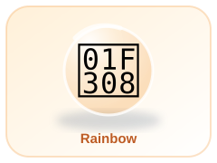
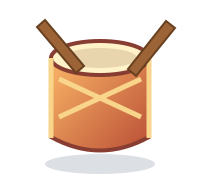
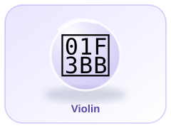

🌈 Welcome to the Creative Arts Studio!
Explore colour, drawing, rhythm and making things.




🖍️ Lesson 1: Colours and Mixing
Learn primary and secondary colours. Red, yellow and blue are traditional primary colours in paint. Mixing two can make a new colour.
Try it: What colour can red and yellow make?
✏️ Lesson 2: Shapes, Lines and Patterns
A curved shape with no corners.
A shape with three sides.
Four equal sides and four corners.
Four sides; opposite sides are equal.
What comes next in this repeating pattern?
🎵 Lesson 3: Rhythm and Music
Clap a steady beat: clap, clap, pause; clap, clap, pause. Try making a quiet beat, then a louder beat. Music can use rhythm, melody and silence.
Ready to practise.
🧵 Lesson 4: Craft and Design
Arrange safe paper shapes to make a picture. Ask an adult before using scissors.
Turn clean cardboard packaging into a model with adult help.
Compare smooth, rough, soft and bumpy materials.
Use safe modelling dough to make a simple 3D object.
🌟 Lesson 5: Art Challenge — 15 Questions
Check what you have learned about colours, shapes, rhythm, design and art safety.
Question 1 of 15
Score: 0 / 15